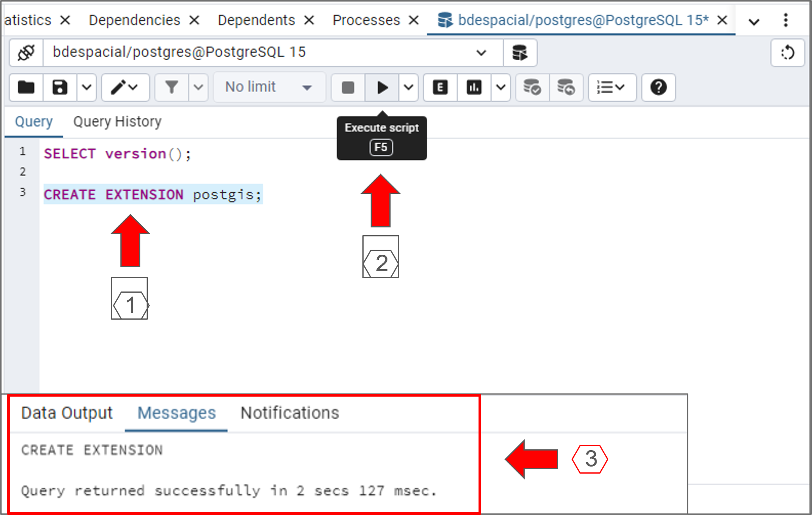
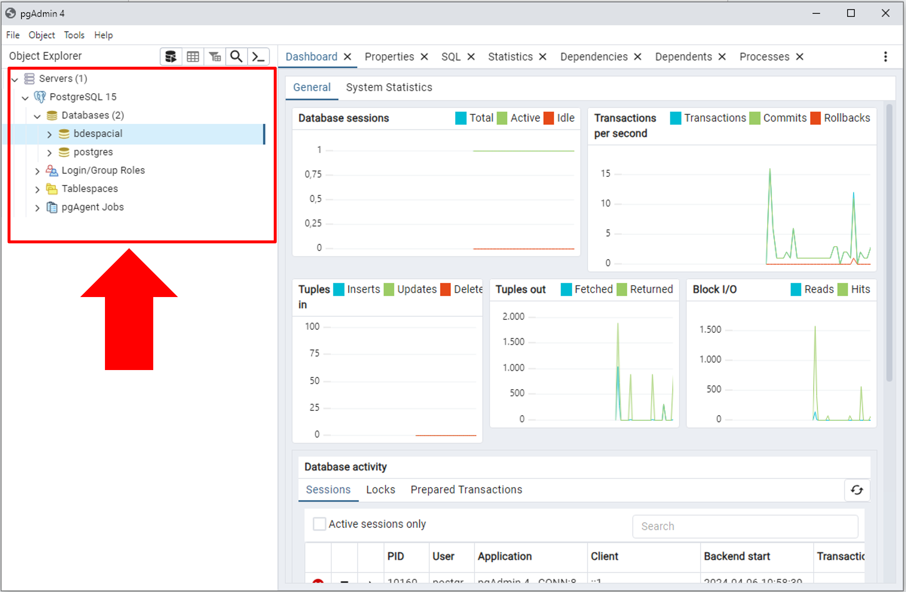
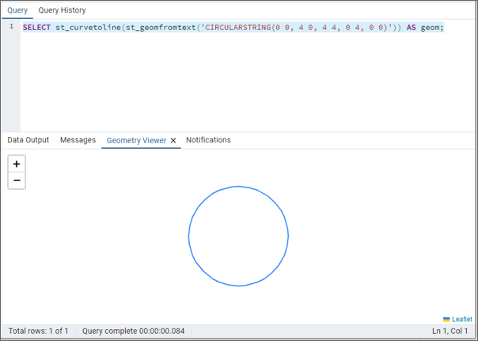
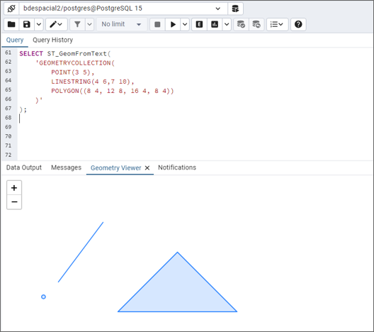
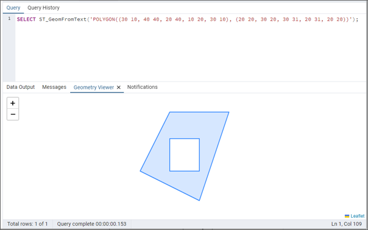
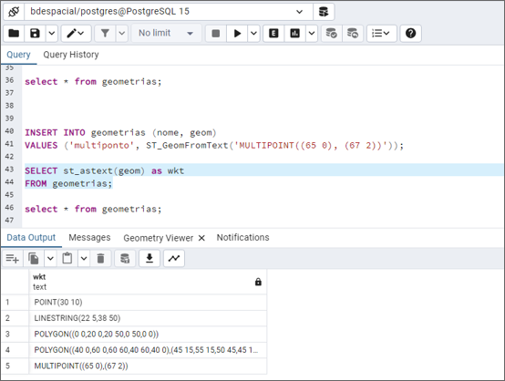

4. TRABALHANDO COM DADOS ESPACIAIS NO POSTGIS#
Neste capítulo, apresentamos uma introdução sobre a manipulação de dados espaciais utilizando o PostGIS, a extensão do sistema de gerenciamento de banco de dados PostgreSQL que habilita o suporte para objetos geográficos.
Embora possamos utilizar o PostrgeSQL e o PostGIS com o Python no ambiente do Google Colab, optamos por utilizar ferramentas que proporcionam uma melhor visualização da estrutura do banco de dados e da manipulação dos dados geoespaciais e alfanuméricos, o que é importante quando se está dando os primeiros passos nessa área.
Para que seja possível realizar as atividades do capítulo, você deve instalar em seu computador o PostgreSQL, o PostGIS e o Pgadmin4, além do Qgis. No ambiente virtual de nossa disciplina, no Moodle, temos o link para um vídeo sobre a instalação desses softwares e extensões.
Inicialmente, vamos explorar as principais ferramentas do pgAdmin 4, uma interface gráfica de usuário destinada à administração do PostgreSQL. O pgAdmin 4 proporciona uma plataforma intuitiva para a execução de tarefas administrativas e consultas em bancos de dados.
Em seguida, criaremos geometrias utilizando a linguagem Well-Known Text (WKT), um padrão textual para representação de formas geométricas. Apresentaremos a fundamentação para a criação de pontos, linhas, polígonos e outras geometrias básicas no contexto dos dados geoespaciais. Logo após, criaremos as tabelas no banco de dados para armazenar os dados do tipo geometry.
Por fim, concluiremos o capítulo com a integração entre o PostGIS e o QGIS, o que facilita a visualização, a edição e a análise de dados geoespaciais. Trabalharemos no processo de configuração do banco de dados PostGIS no ambiente QGIS, bem como no procedimento para importação de shapefiles para o banco de dados diretamente a partir do QGIS.
4.1 Introdução ao pgAdmin4#
O pgAdmin 4 é uma ferramenta de administração e desenvolvimento de código aberto para PostgreSQL. Como a interface gráfica de usuário (GUI) oficial do PostgreSQL, ele permite que os usuários interajam com o banco de dados PostgreSQL através de uma interface web ou desktop, facilitando a execução das tarefas inerentes ao trabalho em banco de dados.
Abra o aplicativo e siga as etapas elencadas a seguir. A figura abaixo apresenta a tela inicial do pgAdmin.

Com o pgAdmin 4 aberto, conecte-se ao seu servidor PostgreSQL clicando no Painel de Navegação (Browser Pane), conforme indicado na figura abaixo.

Será solicitado a senha que você definiu no processo de instalação do PostgreSQL. Insira a senha e pressione OK.
Ao clicar no servidor (no caso de nosso livro-texto, o PostregSQL 15), a árvore do servidor se expande conforme figura abaixo.
Antes de prosseguir com nosso estudo, vamos explorar a interface do usuário do pgAdmin4. A parte superior direita da interface do usuário (figura a seguir) apresenta várias abas que fornecem acesso rápido a diferentes tipos de informações e ferramentas para gerenciar objetos de banco de dados no PostgreSQL.
Dashboard:A aba “Dashboard” fornece uma visão geral do estado atual do servidor ou do banco de dados selecionado, incluindo estatísticas em tempo real, como uso de CPU, memória, atividades de disco, e sessões ativas. É uma ferramenta útil para monitorar a saúde e o desempenho do sistema.Properties (Propriedades):Esta aba exibe as propriedades do objeto de banco de dados atualmente selecionado, como um servidor, banco de dados, tabela, etc. Aqui, você pode ver detalhes como nome, proprietário, encoding (codificação) para bancos de dados, e outras configurações específicas do objeto.SQL:A aba “SQL” mostra o código SQL gerado pelo pgAdmin para criar ou modificar o objeto selecionado. É uma funcionalidade educativa e prática, pois permite que os usuários vejam e aprendam o SQL correspondente às operações realizadas através da interface gráfica, além de permitir a edição e execução direta do SQL.Statistics (Estatísticas):A aba “Statistics” oferece informações detalhadas sobre o desempenho e utilização do objeto selecionado, como índices de tabelas, uso de memória e estatísticas de acesso. É essencial para a análise e a otimização do desempenho de objetos de banco de dados.Dependencies (Dependências):Esta aba lista todos os objetos que dependem do objeto selecionado, ajudando a entender as relações e dependências entre diferentes objetos no banco de dados. É importante no conteto da manutenção do banco de dados, especialmente ao considerar modificações que podem afetar outros objetos.Dependents (Dependentes):Similar à aba “Dependencies”, mas mostrando todos os objetos dos quais o objeto selecionado depende. Essa visão ajuda a garantir que as alterações nos objetos dependentes não afetarão negativamente o objeto em questão.Processes (Processos):A aba “Processes” exibe uma lista dos processos atuais em execução no servidor PostgreSQL, incluindo consultas em andamento, quem as está executando e há quanto tempo estão rodando. Essa ferramenta é útil para monitorar e gerenciar a carga de trabalho no servidor, permitindo identificar e, se necessário, terminar processos que estão consumindo recursos excessivos ou travados.
Voltando para o Painel de Navegação, vamos explorar os componentes de um banco de dados do PostgreSQL. Para tanto, clique em “Databases” e depois em “postgres”.
O banco de dados “postgres” é um banco de dados de sistema que o PostgreSQL cria por padrão, e é comumente usado como um ponto de partida para os administradores de banco de dados quando eles estão configurando seu ambiente PostgreSQL ou executando operações administrativas.
Casts:No contexto de bancos de dados, um “cast” é uma operação que converte um valor de um tipo de dados para outro. No PostGIS/PostgreSQL, os casts são usados para transformar dados espaciais de um formato para outro, ou para converter entre tipos de dados espaciais e tipos de dados primitivos, como strings ou números, quando necessário.Catalogs:Os “catalogs” são conjuntos de tabelas do sistema que armazenam metadados sobre o banco de dados, como informações sobre tabelas, colunas, tipos de dados, funções e outros objetos de banco de dados. Eles são essenciais para o funcionamento interno do PostgreSQL e do PostGIS, permitindo que o sistema gerencie eficientemente os dados e as operações.Event Triggers:Triggers de evento são procedimentos armazenados que são automaticamente executados ou disparados em resposta a eventos específicos no banco de dados, como a criação ou alteração de esquemas ou objetos. No PostGIS, eles podem ser usados para automatizar tarefas de manutenção ou para garantir a integridade dos dados espaciais.Extensions:Extensões são pacotes que estendem a funcionalidade do PostgreSQL com recursos adicionais. O PostGIS é um exemplo de uma extensão, adicionando suporte a dados espaciais. Outras extensões podem oferecer funcionalidades de indexação avançada, tipos de dados adicionais, funções matemáticas, entre outros.Foreign Data Wrappers (FDW):São componentes que permitem ao PostgreSQL acessar dados armazenados em sistemas de armazenamento externos, como outros bancos de dados SQL, fontes de dados NoSQL, ou arquivos. Isso possibilita consultas e operações que integram dados de diferentes fontes diretamente no PostGIS.Languages:Refere-se às linguagens de programação suportadas pelo PostgreSQL para escrever funções ou procedimentos armazenados. Além do SQL, o PostgreSQL suporta várias linguagens, como PL/pgSQL (uma linguagem procedural), PL/Python, PL/Perl, entre outras, permitindo a criação de lógicas complexas de manipulação de dados.Publications:Parte da funcionalidade de replicação lógica do PostgreSQL, as publicações permitem especificar conjuntos de dados (como tabelas) para serem replicados para outros bancos de dados PostgreSQL. Isso é útil para distribuir dados entre diferentes locais ou sistemas.Schemas:Esquemas são como “pastas” dentro de um banco de dados que permitem organizar e gerenciar objetos de banco de dados, como tabelas, funções e views. Isso facilita a gestão de grandes bancos de dados e permite múltiplos projetos ou usuários coexistirem no mesmo banco de dados sem interferência.Subscriptions:Complementando as publicações na replicação lógica, as assinaturas permitem que um banco de dados PostgreSQL “assine” publicações de outro banco de dados, recebendo e aplicando automaticamente as atualizações. Isso é especialmente útil para manter sincronizados bancos de dados em locais diferentes, inclusive com dados espaciais.
4.1.1 Criação de Bancos de Dados#
Para criar um novo banco de dados, clique com o botão direito do mouse em Databases sob o servidor desejado e selecione Create > Database.
Insira um nome para o banco de dados, conforme a figura abaixo, e clique em Save. Em nosso caso, criamos um banco de dados chamado bdespacial.
No painel de navegação, clique no banco de dados criado (bdespacial) para expandir a sua árvore.
É possível verificar que temos os nove elementos de um banco de dados PostgreSQL que vimos anteriormente no banco de dados “postgres”.
4.1.2 Execução de Consultas SQL:#
O pgAdmin 4 fornece um editor de SQL integrado para escrever e executar consultas. Para acessá-lo, clique com o botão direito do mouse em um banco de dados e selecione Query Tool, ou no botão destacado na figura a seguir.
No editor que se abre, você pode escrever suas consultas SQL e executá-las clicando no botão de execução.
É importante verificar se o editor abriu no banco de dados específico em que você está trabalhando, para garantir que as consultas sejam executadas no contexto correto e evitar alterações indesejadas em outros bancos de dados.
Inicialmente, consulte qual é a versão do PostgreSQL que está instalada em sua máquina. Para tanto, escreva a consulta em SQL e clique no botão Execute Script (ou clique em F5 em seu teclado).
A saída da consulta será exibida na parte inferior da área de trabalho, conforme figura abaixo.
O próximo passo é habilitar a extensão espacial postgis.
Embora o PostGIS esteja instalado em seu computador, ele deve ser ativado para cada banco de dados no qual você deseja usar suas funcionalidades. Isso é feito através da execução de um comando SQL específico no editor do pgAdmin4. A ativação permite que o banco de dados suporte dados espaciais.

Para consultar qual é a versão do PostGIS instalada em seu computador, digite o código conforme figura abaixo.
Vamos verificar se a extensão PostGIS aparece em Extensions no painel de navegação. Para isso, é necessário atualizar o painel de navegação. Selecione Extensions, clique com o botão direito do mouse e selecione Refresh.
A árvore de seu banco de dados será atualizada e será possível visualizar a extensão “PostsGIS” recém ativada.
4.1.3 Mais sobre esquemas em bancos de dados#
Como vimos anteriormente, os esquemas são como “pastas” dentro de um banco de dados que permitem organizar e gerenciar objetos de banco de dados, como tabelas, funções e views. Podemos visualizar os objetos que compõe um esquema na figura abaixo:
No pgAdmin 4, um esquema organiza uma série de objetos de banco de dados, permitindo a gestão estruturada e a organização lógica dos dados. Aqui estão explicações breves para cada um dos tipos de objetos que você pode encontrar em um esquema no pgAdmin 4:
Aggregates:Funções que realizam uma operação em um conjunto de valores e retornam um único valor, como soma ou média.Collations:Define as regras para a comparação de strings, permitindo especificar idiomas e ordenações específicas para comparação de texto.Domains:Tipos de dados personalizados baseados em tipos existentes, com restrições adicionais aplicadas, como limites de valor ou verificações de validade.FTS Configurations(Configurações de Texto de Busca Completa): Configurações que definem como as buscas textuais completas são realizadas, incluindo quais dicionários de palavras são usados e como os tokens são processados.FTS Dictionaries(Dicionários de Texto de Busca Completa): Dicionários que definem como as palavras são normalizadas para buscas textuais completas, influenciando o reconhecimento de sinônimos, variantes de palavras e correção ortográfica.FTS Parsers(Analisadores de Texto de Busca Completa): Componentes que determinam como o texto é dividido em tokens ou palavras durante a indexação para buscas textuais completas.FTS Templates(Modelos de Texto de Busca Completa): Templates usados para definir a lógica de processamento de tokens nas configurações de busca textual completa.Foreign Tables:Tabelas que representam dados armazenados fora do banco de dados atual, permitindo consultas a dados localizados em fontes de dados externas como se estivessem dentro do próprio PostgreSQL.Functions:Blocos de código que executam operações específicas e podem retornar valores. São usadas para encapsular lógicas complexas que podem ser reutilizadas em várias consultas ou operações.Materialized Views:Views que armazenam fisicamente o resultado de uma consulta no banco de dados para acesso rápido, ao contrário das views tradicionais que calculam os resultados dinamicamente.Operators:Símbolos ou palavras-chave que especificam uma operação a ser executada entre dois ou mais operandos, como operações matemáticas ou de comparação.Procedures:Semelhante às funções, são blocos de código que realizam operações, mas, ao contrário das funções, podem executar várias operações SQL e não necessariamente retornar um valor.Sequences:Objetos que geram números sequenciais únicos, comumente usados para gerar identificadores únicos para novas linhas em tabelas.Tables:Estruturas que armazenam dados organizados em linhas e colunas, formando a espinha dorsal da maioria dos bancos de dados.
Clique no símbolo > em “Tables” para verificar as tabelas existentes no banco de dados.
Quando habilitamos a extensão PostGIS, automaticamente é criada a tabela spatial_ref_sys. Ela é uma componente essencial em bancos de dados que utilizam o PostGIS.
Essa tabela armazena informações sobre os Sistemas de Referência Espacial (Spatial Reference Systems - SRS), que são cruciais para trabalhar com dados geoespaciais.
Cada sistema de referência espacial é identificado por um SRID (Spatial Reference IDentifier), um identificador único que define a projeção, o datum, e outras informações de transformação necessárias para interpretar corretamente as coordenadas espaciais. Na figura abaixo temos uma visualização da tabela spatial_ref_sys.
Trigger Functions:Funções especiais associadas a triggers, que são automaticamente invocadas quando eventos específicos ocorrem em uma tabela, como inserções, atualizações ou exclusões.Types:Define novos tipos de dados que podem ser usados para colunas de tabela, argumentos de função ou resultados de consulta, aumentando a flexibilidade e a precisão no manuseio de dados.Views:Representações virtuais de resultados de consultas SQL, que podem ser usadas como se fossem tabelas, mas não armazenam dados fisicamente.
Clique em > ao lado de Views. Quando habilitamos a extensão PostGIS, automaticamente são criadas duas views, geography_columns e geometry_columns, conforme figura abaixo.
As visões geography_columns e geometry_columns são metadados fornecidos pelo PostGIS para facilitar o acesso a informações sobre colunas que armazenam dados geográficos e geométricos em um banco de dados PostgreSQL. Elas desempenham um papel importante na organização e no entendimento da estrutura de dados espaciais.
A visão geography_columns lista todas as colunas do tipo geography em todas as tabelas do banco de dados. Para cada coluna geography, esta visão mostra informações como o nome da tabela, o nome da coluna, o tipo de dados espaciais (ponto, linha, polígono, etc.), e a dimensionalidade (2D, 3D, etc.).
Já a visão geometry_columns fornece detalhes sobre as colunas do tipo geometry em todas as tabelas do banco de dados. Similar à geography_columns, esta visão inclui o nome da tabela, o nome da coluna, o tipo de dados geométricos (como ponto, linha, polígono), a dimensionalidade e, adicionalmente, o SRID (Spatial Reference System Identifier).
4.2 Criando geometrias com WKT E WKB#
A criação de geometrias no PostGIS geralmente é realizada através da representação textual de tipos de dados espaciais, utilizando padrões bem estabelecidos, como o Well-Known Text (WKT) e suas contrapartes binárias, o Well-Known Binary (WKB).
Ambos são formatos padronizados para representar geometrias, como pontos, linhas e polígonos, e são amplamente utilizados para a interoperabilidade entre sistemas de informação geográfica (GIS).
Além do WKT, o PostGIS também suporta o formato GeoJSON e outros padrões OGC para trabalhar com dados espaciais.
4.2.1 Well-Known Text (WKT)#
Well-Known Text (WKT) é um padrão de notação textual utilizado para representar geometrias espaciais em sistemas de informações geográficas (SIG). Ele é amplamente utilizado para trocar e armazenar informações geográficas devido à sua legibilidade tanto por humanos quanto por máquinas.
Abaixo, exploraremos exemplos de WKT para diferentes tipos de geometrias espaciais: ponto, linha e polígono, oferecendo uma compreensão mais detalhada de como cada tipo de geometria é representada.
Todo o código utilizado está disponível no Moodle, na semana 4. Você pode baixá-lo e abrir utilizando o bloco de notas ou outro programa de sua preferência.
WKT de um ponto:
POINT(30 10)
Na notação POINT(30 10), POINT é um construtor que cria um objeto geométrico ponto a partir de um par de coordenadas. Os números entre parênteses, neste caso, “30” e “10”, especificam as coordenadas cartesianas ou geográficas desse ponto.
O primeiro número, “30”, é a coordenada X, que pode representar a longitude em um contexto geográfico. O segundo número, “10”, é a coordenada Y, que pode representar a latitude.
WKT de uma linha:
LINESTRING(30 10, 10 30, 40 40)
Aqui, estamos definindo um objeto geométrico diferente: uma linha que conecta múltiplos pontos.
Cada par de coordenadas dentro dos parênteses define um ponto, e a linha conecta esses pontos na ordem dada, começando no ponto (30, 10), passando pelo ponto (10, 30), e terminando no ponto (40, 40). A linha criada com esses pontos é apresentada abaixo.
WKT de um polígono simples:
POLYGON((30 10, 40 40, 20 40, 10 20, 30 10))
Na representação ‘POLYGON((30 10, 40 40, 20 40, 10 20, 30 10))’, POLYGON especifica o tipo de objeto geométrico, neste caso, um polígono.
Os pares de números entre parênteses representam as coordenadas dos vértices que delimitam o polígono no espaço.
Cada par de coordenadas determina um ponto, com o primeiro número sendo a coordenada X (longitude) e o segundo número a coordenada Y (latitude). O polígono é formado conectando-se os pontos na ordem especificada, criando lados que delimitam uma área fechada.
No exemplo dado, os pontos são (30 10), (40 40), (20 40), (10 20), e retorna ao ponto inicial (30 10) para fechar o polígono. O polígono resultante é apresentado na figura a seguir.
WKT de um polígono com furo:
'POLYGON((30 10, 40 40, 20 40, 10 20, 30 10), (20 20, 30 20, 30 31, 20 31, 20 20))'
Na representação ‘POLYGON((30 10, 40 40, 20 40, 10 20, 30 10), (20 20, 30 20, 30 31, 20 31, 20 20))’, estamos lidando com um polígono que possui um “furo” ou uma área interna que não faz parte do polígono. “POLYGON” indica que o tipo de objeto geométrico é um polígono.
As coordenadas dentro do primeiro par de parênteses representam os vértices do polígono externo, definindo o limite exterior da forma, enquanto as coordenadas dentro do segundo par de parênteses definem os vértices de um polígono interno, ou seja, o “furo”.
Os pares de números representam as coordenadas dos vértices no espaço, com o primeiro número de cada par sendo a coordenada X (longitude) e o segundo número a coordenada Y (latitude).
No exemplo, o polígono externo é definido pelos pontos (30 10), (40 40), (20 40), (10 20), e volta ao ponto inicial (30 10) para fechar a forma. Em seguida, o polígono interno (o furo) é delineado pelos pontos (20 20), (30 20), (30 31), (20 31), e retorna ao ponto inicial (20 20) para fechar a forma interna.
O polígono resultante é apresentado na figura a seguir.
Essa construção permite a representação de áreas mais complexas, onde não apenas a borda externa, mas também uma ou mais áreas internas excluídas são definidas, permitindo uma descrição geométrica precisa de formas que possuem recortes ou espaços vazios internos.
4.2.2 Well-Known Binary (WKB)#
O Well-Known Binary (WKB) é um formato binário padronizado utilizado para representar geometrias de maneira compacta e eficiente. Desenvolvido como um complemento ao Well-Known Text (WKT), o WKB oferece uma maneira de serializar dados geométricos que é otimizada para armazenamento e processamento por computadores.
Enquanto o WKT é legível por humanos e fácil de editar manualmente, o WKB é projetado para ser processado por máquinas, permitindo uma manipulação mais rápida e eficiente dos dados espaciais.
Devido à sua eficiência e compactação, o WKB é amplamente utilizado em bancos de dados espaciais e aplicações que requerem manipulação intensiva de dados geoespaciais.
A escolha entre WKT e WKB geralmente depende do contexto de uso: WKT é preferido pela legibilidade e facilidade de edição, enquanto WKB é escolhido pela eficiência em armazenamento e processamento.
4.2.3 Criando Geometrias com ST_GeomFromText e ST_GeographyFromText#
Para começar a criar geometrias a partir de WKT no PostGIS, podemos utilizar as funções ST_GeomFromText() ou ST_GeographyFromText. Essas funções aceitam uma string WKT como argumento e retornam uma geometria correspondente.
Além de usar WKT, você também pode criar essas geometrias usando funções específicas para construir geometrias a partir de arrays de pontos ou linhas, como ST_Multi, ST_Collect, ou ST_Union, dependendo das suas necessidades específicas e da estrutura dos seus dados.
ST_GeomFromText#
O ST_GeomFromText é uma função do PostGIS usada para converter uma string WKT em uma geometria PostGIS correspondente.
Essa função é fundamental para inserir e operar com dados espaciais representados em formato de texto. A sintaxe básica desta função é:
ST_GeomFromText(text WKT, [integer srid]);
Vamos criar geometrias utilizando a função ST_GeomFromText. Abra o pgAdmin4 e conecte ao banco de dados que havíamos criado na seção anterior, o bdespacial.

Selecione o banco de dados bdespacial e abra a ferramenta de consulta (Query Tool).
A sua área de trabalho no pgAdmin deve estar como apresentado na figura abaixo.
Na área de consulta, vamos criar consultas para a criação de diversos tipos geométricos.
Ponto (POINT)
Digite a consulta conforme a imagem abaixo. Em seguida, clique em Execute Script (ou pressione F5). A saída da consulta estará na parte inferior da tela.
A sequência de números criada acima, em st_geomfromtext, é a codificação binária do ponto geométrico que especificamos, armazenado em um formato que o PostGIS pode interpretar e utilizar para operações espaciais.
Esse formato binário é conhecido como EWKB (Extended Well-Known Binary), que é uma extensão do formato padrão WKB. O EWKB adiciona suporte para SRID (Spatial Reference System Identifier) e outros bits de informação que não estão presentes no WKB padrão. Essa representação binária é utilizada internamente pelo PostGIS para armazenar e operar com eficiência sobre dados geométricos.
Na consulta:
SELECT: Este é o comando SQL básico usado para recuperar dados de um banco de dados. Neste contexto, ele é usado para executar a função e retornar seu resultado.
ST_GeomFromText: Converte uma string de WKT em um objeto geométrico.
'POINT(30 10)': Esta é a string WKT passada como argumento para a função ST_GeomFromText. Ela descreve um objeto geométrico do tipo ponto.
Para visualizar o ponto criado no próprio pgAdmin, vamos utilizar a funcionalidade Geometry Viewer, conforme a figura a seguir.
Vamos criar pontos tridimensionais. Na consulta abaixo, o terceiro valor entre parênteses representa a coordenada Z do ponto.
A funcionalidade “Geometry Viewer” não suporta visualização de geometrias tridimensionais.
Linha (LINESTRING)
Digite a consulta conforme a imagem abaixo que gera uma linha como saída. Em seguida, clique em Execute Script (ou pressione F5). A saída da consulta estará na parte inferior da tela.
No exemplo anterior criamos uma linha com dois pontos. O exemplo a seguir cria uma linha a partir de três pontos.
Polígono (POLYGON)
Para criar um polígono simples podemos utilizar a seguinte consulta:

Para criar um polígono com furo, a sintaxe é:
Neste exemplo, o primeiro conjunto de coordenadas define o contorno externo do polígono, enquanto o segundo conjunto define a geometria do furo.
CircularString para Linestring
No PostGIS, é possível também criar circunferências e arcos. No exemplo abaixo criamos uma circunferência.

Para criar geometrias mais complexas, como multipoint, multilinestring ou multipolygon, utilizamos consultas similares às apresentadas anteriormente.
Multiponto (MULTIPOINT)
Um MULTIPOINT é uma coleção de vários pontos, que podem ser criados conforme a figura abaixo.
Este comando agrupa vários pontos individuais em um único objeto.
Qual a diferença entre definir um dado como POINT ou MULTIPOINT?
A diferença fundamental entre definir um dado como sendo do tipo POINT e do tipo MULTIPOINT reside na quantidade de localizações que cada tipo pode representar dentro de uma única geometria. Ambos são utilizados para armazenar e gerenciar dados espaciais, mas servem a propósitos distintos com base na complexidade dos dados que se deseja modelar.
Um POINT representa uma única localização no espaço. Se você tem vários pontos e cada um tem seus próprios atributos ou representa uma entidade distinta, você trataria cada um como um POINT separado. Cada ponto pode ter seus próprios atributos associados, como nome, tipo, ou qualquer outra característica relevante para o dado.
Um MULTIPOINT, por outro lado, é usado para representar múltiplas localizações como uma única entidade geométrica. Isso não implica necessariamente que todos os pontos dentro de um MULTIPOINT tenham que compartilhar os mesmos atributos. Em vez disso, significa que você está agrupando vários pontos em uma única entidade por razões de conveniência ou análise. Por exemplo, se você está representando um conjunto de árvores de uma mesma espécie dentro de um parque como uma única entidade, mas não precisa diferenciar entre cada árvore individualmente.
A decisão entre definir uma entidade no banco de dados como POINT ou MULTIPOINT está mais relacionada à modelagem e a análise geométrica dos dados do que à uniformidade de seus atributos. Isto vale também para LINESTRING/MULTILINESTRING E POLYGON/MULTIPOLYGON.
Multilinha (MULTILINESTRING)
Uma MULTILINESTRING é uma coleção de várias linhas, permitindo armazenar múltiplas linestrings como uma única entidade geométrica.
Digite o código conforme a figura abaixo para criar uma MULTILINESTRING.
Multipolígono (MULTIPOLYGON)
Um MULTIPOLYGON é uma coleção de vários polígonos, útil para representar múltiplas áreas distintas em uma geometria única:
Coleção de Geometrias (GEOMETRYCOLLECTION)
Uma GEOMETRY COLLECTION permite agrupar diferentes tipos de geometrias (pontos, linhas, polígonos) em uma única entidade no banco de dados. Na figura abaixo apresentamos um exemplo de GEOMETRY COLLECTION.

ST_GeographyFromText#
A função ST_GeographyFromText no PostGIS é usada para converter uma representação textual de uma geometria, conhecida como WKT, em um tipo de dado GEOGRAPHY.
Como vimos no capítulo 3, a diferença principal entre os tipos GEOMETRY e GEOGRAPHY é que enquanto GEOMETRY assume um plano cartesiano, o tipo GEOGRAPHY considera a curvatura terrestre.
ST_GeographyFromText(text WKT, [integer srid]);
Exemplo:
Neste exemplo, a função está convertendo uma string WKT que representa um ponto (longitude e latitude de um local em Brasília) em um tipo Geography. Note que, diferente do Geometry, ao trabalhar com Geography é comum (e recomendado) incluir o SRID. Nesse exemplo, especificamos o SRID como 4674, que representa o sistema SIRGAS2000.
É importante destacar que enquanto a ST_GeomFromText pode ser usada sem especificar um SRID, e neste caso, ele assume o valor padrão 0, na ST_GeographyFromText, espera-se que o SRID seja especificado para que os cálculos sejam realizados corretamente. Se o SRID não for especificado, o PostGIS assume o padrão 4326 para o tipo Geography.
4.3 Verificando a validade de geometrias#
A verificação da validade de geometrias é uma etapa de grande relevância no trabalho com dados espaciais, especialmente quando esses dados são usados para análises complexas ou decisões críticas em sistemas de informações geográficas (SIG).
Geometrias inválidas podem levar a erros de cálculo, falhas em consultas espaciais e dificuldades na visualização de dados.
Para verificar a validade de uma geometria no PostGIS, a função ST_IsValid é frequentemente empregada. Esta função retorna TRUE se a geometria for válida, de acordo com as regras do Open Geospatial Consortium (OGC), ou FALSE se for inválida.
Dado o polígono com furos representado na figura abaixo, vamos consultar a sua validade.

Para verificar sua validade, utilizamos a função ST_IsValid.
Podemos verificar que a função retornou true, indicando que a geometria é válida.
Agora vamos consultar a validade de outra geometria, definida de acordo com as coordenadas apresentadas na figura abaixo:
Para verificar a validade dessa geometria:
A consulta retornou false, indicando que a geometria não é válida.
Para entender o motivo da invalidação da geometria, aplicamos a consulta conforme figura abaixo.
O resultado Self-intersection[18 16] indica que a geometria do polígono é considerada inválida devido a uma auto-interseção em um ponto cujas coordenadas são aproximadamente (18, 16).
Isso significa que uma das linhas do polígono cruza outra linha ou si mesma em algum lugar, o que não é permitido em uma geometria válida de polígono segundo as regras definidas pelo Open Geospatial Consortium (OGC).
4.4 Criando e inserindo dados do tipo Geometry em tabelas#
No PostGIS, criar tabelas com colunas do tipo Geometry é um processo bastante direto. As etapas básicas para criar uma tabela com uma coluna do tipo Geometry são:
Criar a tabela: Use o comando CREATE TABLE para criar uma tabela;
Adicionar a coluna que armazenará a geometria: Utilize a função AddGeometryColumn ou simplesmente declare uma coluna do tipo Geometry dentro do comando
CREATE TABLE;Definir o tipo de geometria e
SRID: Durante a criação da coluna de geometria, você pode especificar o tipo de geometria (ponto, linha, polígono, etc.) e oSRID(Spatial Reference System Identifier), que define o sistema de referência espacial para a coluna que armazenará as geometrias. No exemplo que apresentaremos a seguir, não especificaremos oSRIDdas geometrias.
Inicialmente, vamos criar uma tabela denominada geometrias para armazenar nossos dados espaciais.
Esta tabela incluirá um id como chave primária, um campo nome para descrever a geometria e um campo geom, do tipo GEOMETRY, para armazenar a geometria propriamente dita.
Escreva a consulta de acordo com a figura abaixo. Em seguida, clique em Execute Script ou tecle F5.
Podemos verificar que a tabela foi criada com sucesso, em 174 milissegundos.
Para visualizar a nova tabela criada no Painel de Navegação, selecione Tables, clique com o botão esquerdo do mouse e selecione Refresh.

O Painel de navegação será atualizado e é inserida a tabela geometrias na visualização.
Clique no nome da tabela, com o botão direito do mouse, para verificar os componentes da tabela, que devem estar conforme a figura abaixo.
Selecionando Columns, é possível visualizar os atributos da tabela.
A tabela geometrias tem os atributos id, nome e geom, conforme definido na consulta inicial para a criação da tabela.
Inserindo dados na tabela “geometrias”
Após a criação da tabela, a próxima etapa consiste na inserção de dados. Teremos dados dos seguintes tipos geométricos: ponto, linha, polígono, multiponto, multilinha, multipolígono e coleção de geometrias.
Para fins didáticos, os dados serão inseridos um a um. Em uma situação real, provavelmente inseriríamos todos os dados em uma só consulta.
Para inserir o primeiro dado, do tipo POINT, digite a consulta e execute o script, confirmando que foi executado com sucesso, conforme a figura abaixo.
Você pode converter a geometria criada de sua representação binária para WKT, utilizando a função ST_AsText.
Essa opção de visualização é mais simples e direta de entender do que a representação binária.
Para consultar todo o conteúdo da tabela, executamos a consulta apresentada na figura a seguir.
Para visualizar a geometria inserida no banco de dados, utilizamos o Geometry Viewer.
Após clicar no Geometry Viewer, a geometria será apresentada na parte inferior da área de trabalho.
A segunda geometria que iremos inserir é uma linha.
Para visualizar as geometrias armazenadas no banco de dados em formato WKT, aplicamos a consulta conforme a figura abaixo.
Para consultar todo o conteúdo da tabela, executamos a consulta apresentada na figura a seguir.
Podemos verificar que temos tanto o ponto quanto a linha. Para visualizar as suas geometrias:
A seguir, vamos inserir um polígono em nosso banco de dados e visualizar as geometrias armazenadas como WKT.
Em seguida, visualizamos as geometrias como imagem.
Vamos inserir um polígono com furos e realizar o mesmo procedimento de visualização que adotamos para as geometrias anteriores.
Após a inserção de geometrias simples, vamos inserir geometrias mais complexas, como MULTIPOINT, MULTILINESTRING e MULTIPOLYGON. Para inserir um MULTIPOINT:

Para inserir uma MULTILINESTRING:
Para visualizar todo o conjunto de geometrias:
Para inserir um MULTIPOLYGON:
Para visualizar todo o conjunto de geometrias:
Por fim, vamos inserir uma GEOMETRY COLLECTION composta por um ponto e uma linha apenas.
Para visualizar o conjunto final, com todas as geometrias:
4.5 Salvando o código em .sql.#
Para salvar o seu código, clique no ícone Save File conforme indicado na imagem abaixo e defina o local para salvar o arquivo.
O arquivo será salvo em formato .sql.